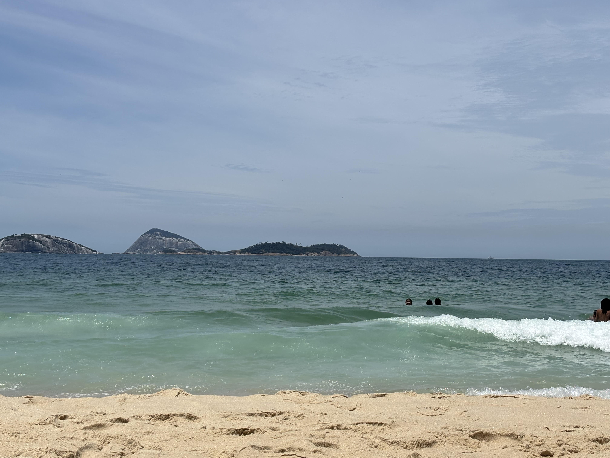

Sobre esta galería
Río de Janeiro es conocida popularmente como "la ciudad maravillosa" por la combinación única de playas, cerros y paisaje urbano que la caracteriza. Esta galería reúne algunos de los lugares más representativos de la ciudad, cada uno con su propia página, fotos y una breve descripción.
